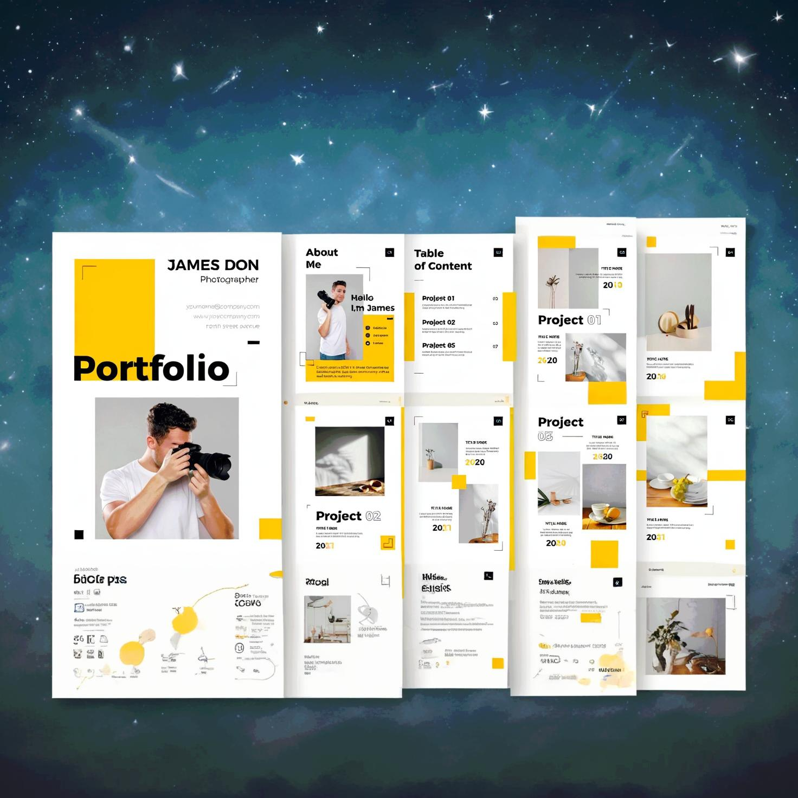

My Projects
Stop Watch web Application
My stopwatch website is a user-friendly and efficient tool for tracking time accurately. It features a sleek design and intuitive interface, making it perfect for various timing needs, from workouts to productivity tasks.A StopWatch Web Application
Tic-tac-toe web Application
My Tic-Tac-Toe website offers a fun and interactive way to play this classic game online. With a sleek design and smooth gameplay, it's perfect for both casual gamers and enthusiasts alike. A tic-tac-toe Application
Weather Info Web Application
My weather info website provides accurate and up-to-date weather forecasts, helping users plan their days with confidence. With a user-friendly interface and detailed weather data, it's the perfect tool for staying informed about the weather conditions. A Weather application
My Portfolio Website

My personal portfolio website showcases my skills, projects, and experiences in web development. Designed with a clean and modern aesthetic, it highlights my journey and capabilities, offering visitors an engaging and comprehensive overview of my work. A potfolio website